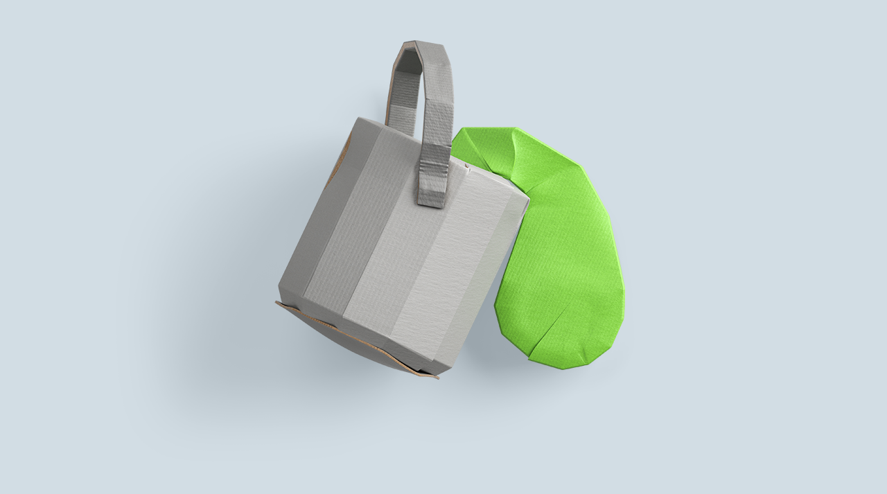

COMMENTS
4

NINO
3 day ago
Infants no longer needed to be carried, as nomadic ones must. Additionally, children could contribute labor to the raising of crops more readily than they could to the hunter-gatherer economy. The invention of polished stone axes was a major.
ALBERT
7 day ago
Optimistic assumptions are made by proponents of ideologies such as transhumanism and singularitarianism, which view technological development as generally having beneficial effects for the society and the human condition. In these ideologies, technological development is morally good. Some critics see these ideologies as examples of scientism and techno-utopianism and fear the notion of human enhancement and technological singularity which they support.
ALEX
1 day ago
Man's technological ascent began in earnest in what is known as the Neolithic period ("New stone age"). The invention of polished stone axes was a major advance that allowed forest clearance on a large scale to create farms. Agriculture fed larger populations, and the transition to sedentism allowed simultaneously raising more children, as infants no longer needed to be carried, as nomadic ones must. Additionally, children could contribute labor to the raising of crops more readily than they could to the hunter-gatherer economy.